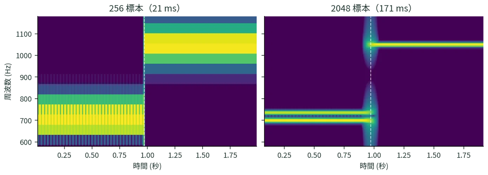

第31章 畳込み、フィルタ、時間周波数解析
エコー・フィルタ・スペクトログラムを、畳込みという一つの考え方で理解する。
この章で学ぶこと
- 線形時不変系とインパルス応答の意味を知る
- 短いエコーが櫛形フィルタになる理由を理解する
- スペクトログラムの窓の長さと見え方の関係を知る
過去の入力が現在に残る系
同じ音を2回鳴らして間隔を変えたとき、出力の2回分が互いに加わると予想できる系を考える。線形とは入力の和・スカラー倍が出力でも保存されること、時不変とは入力を遅らせれば出力も同じだけ遅れることである。インパルス は だけ1。系 がこれに応答する列 を知れば、有限長入力の応答は全部得られる。
定理（線形時不変系の畳込み表現）。 が線形時不変で、入力 が有限台なら、 に対して
証明を読む（読まなくても先へ進めます）
。有限和なので線形性で を項別に適用できる。時不変性から 。∎
例・手順
具体例。 なら、。 標本後に一定比 で響くエコーである。 Hz、 なら0.1秒。フィードバックへ入れる では、 の応答が （ 標本の時点）と無限に続く。 なら有界入力に対して が成り立つ。繰返しが本来減衰する設計で を使うとモデルがその保証を失う。
線形時不変系に正弦波を入れる
複素指数 を代入する。 が絶対総和可能なら したがって同じ周波数が出て、振幅は 倍、位相は 変わる。前のエコーなら 。 で のとき破壊的に干渉してゼロ。連続する谷の周波数差は 。このため、ごく短い遅延ではエコーと聞こえなくても、音色が櫛形に変わる。
命題（DFTと循環畳込み）。 長さ の周期列を とし、 とする。DFTを とすれば、 のDFTは各ビンの積 。
証明を読む（読まなくても先へ進めます）
DFTに定義を代入し和を入れ替える。各固定 で は を一度ずつ走る。複素指数 は に等しいので、 と の二つの和に分解できる。∎
長さ の線形畳込みは長さ 。周期折返しを避けるにはFFT長 まで両方をゼロで埋める。音声全体を一度で処理しない場合は、入力を複数のブロックへ分け、各出力をもとの時刻へ置いて重なりを足す overlap-add を使える。頭からの出力を切り捨てる方式などもあり、処理の遅延とブロック長を区別する。 Julius O. Smith S44
スペクトログラムを作って読める範囲を決める
長さ の窓 を hop 標本ごとにずらし、各時刻の局所DFTをとる。 は窓の番号、 はビン番号。描画では の相対値を使う例がある。、 kHz の窓幅は約42.7 ms、ビン間隔は約23.4 Hz。 の窓の移動は約5.33 ms。移動が細かくても個々の窓の幅は短くならない。窓を長くすると近接周波数を識別しやすいが、短い過渡の時刻を明確に見るには不利になる。大きなにゼロ詰めするだけで、実際の観測時間が延びるわけではない。

やってみよう
手計算。 、 の線形畳込みは 。各入力に対して、直前との差を取る演算である。FFT長を3のまま循環畳込みすると、最後の が最初に折り返して 。コードの量だけでなく、用いた畳込みの型を検査する。
ここだけ押さえる
- インパルス応答が分かれば、どんな入力に対する出力も計算できる。
- ごく短い遅延は、エコーではなく音色の変化として聞こえる。
- 長い窓は周波数を、短い窓は時間を細かく見るのに向く。